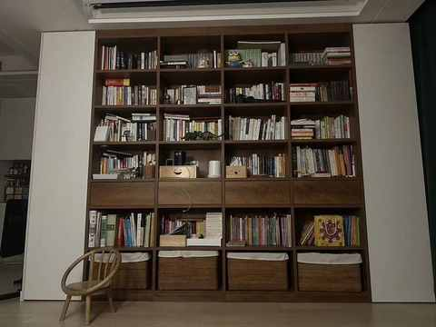
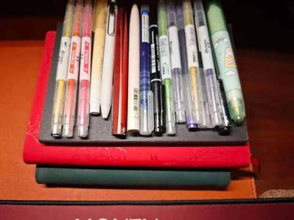
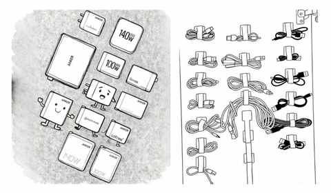
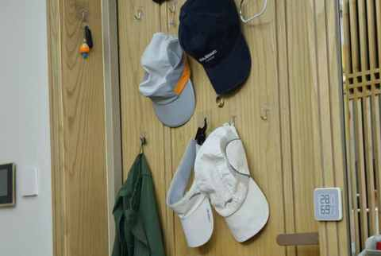

不思考，你就会买很多并不需要的东西
一、引子
最近几个月因为跑量增加的缘故，看了不少博主关于跑鞋的测评和分享。
其中，up主 @东哥真的很严格 ，是真的想帮大家建立自己的选鞋逻辑，每个视频都力求把细节讲清楚，某些视频里面的输出让人醍醐灌顶。
如果不思考，很容易费时费力费钱，然后买很多根本不需要的东西。
二、那些买后但不用的东西
每个人，肯定都有一些东西是买了之后就忘了的，然后再某一天整理东西的时候不禁发出疑问：我啥时候买了这个？！
1️⃣ 实体书
现在家里还有许多书买了有 10 年多了，只是在内页写上了姓名和日期，序言都没有看完，也完全忘了为什么会买这本书。

好在现在是看电子书为主，想看什么书，在微信读书 APP 里面检索，然后加入书架即可，虽然做了这个操作，不代表很快会看这本书，但相比买一本实体书，更省时省力也更省钱！
2️⃣ 本子和笔
到了三年级，娃养成一个习惯，每次放学路过包子铺和晨光文具的店的时候，大概率会去晨光文具店逛个 10 来分钟，偶尔会先买个包子，边吃边逛。
高中的时候，我是在县城上学，每周都要去文具店狠狠逛一逛，所以在工作了之后难免会在网上冲浪的时候，想起来可能缺几支笔和本子，接着是一气呵成完成下单。

现在文具店里面的东西，比我小时候丰富很多，里面不仅有各种文具，还有不少时下流行的玩具，刚开学的时候门口有哪吒和敖丙的人形立牌，现在流行的是罗小黑电影系列的徽章盲盒。
随着年龄的渐长，文具店对中年人来说已经没有多少吸引力了，但每年总有那么几次会买上几支笔和几个本子，虽然大概率都用不上。
3️⃣ 充电头和充电线
这两个物件，可谓是中年男人全年都极其感兴趣的了。

各种各样细分的需求，都有商家满足，区分不同的功率、协议、场景、用途……
4️⃣ 各种跑步装备
跑步装备可太多了：帽子、袜子、跑步鞋、腰包、发带、背心、T恤、短裤……
在刚开始入坑跑步的阶段，很难抑制自己不去关注这些消息，越关注越会产生购买冲动，进而化冲动为行动。

跑步鞋目前在鞋柜里面的，用 5 双，其中一双准备丢掉。
即便如此，也还有 4 双，后面准备保持在 3 双，一双主要比赛穿，另外两双日常跑步换着穿，多了实在是累赘。
三、结语
所以，避免囤积物品的关键，并不是一味克制欲望，而是在按下付款键前，停顿片刻，问自己一句：“我真正的需要是什么？” ，给思考预留一个契机和时间差。
当我们开始主动思考，消费便从一种被欲望驱使的行为，转变为服务于更好生活的技能，更重要的是，在这个过程中，我们能加深对自己的了解。
近期文章
别再问我省多少油钱了！作为 8年新能源车主，我想说 ……
35岁的这个11月，我竟挑战了这么多“第一次”
日更，是不断了解自己的过程
90年，35岁，日更90天，有了这 3 个意外收获
听播客5年，日均108分钟：这3个收获，让我认识到“声音”的力量
小米高端化成了吗？拿15S Pro当主力机4个月，我有这5个真实感受
嘿！还记得“为QQ等级挂机”的岁月吗？来晒晒你的等级吧！
11 个月，开极氪7X跑两万公里，用车总结及好物分享
一个长居省外中年人的合肥印象：记2025的年第4次合肥行
中年减肥成功2年后，才发现运动形式真不重要，守住这3点才能 不反弹